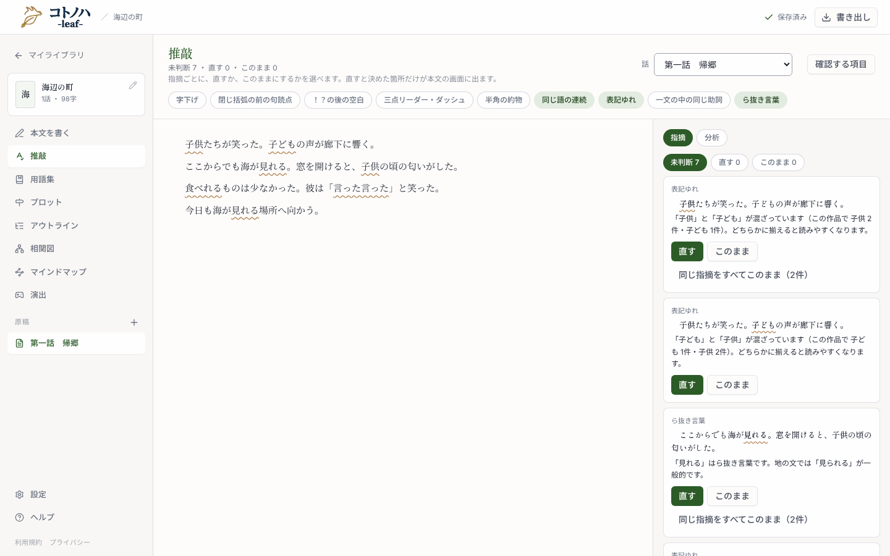

推敲画面で、作品ごとの決まりを作れるようにします。わざと使っている言葉は「この作品では指摘しない」、表記ゆれは「◯◯にそろえる」。同じ「このまま」や「直す」が重なったら、決まりにするかを、絞り込みのチップと一覧の間（一覧のスクロールの外）で提案します。決まりは「この作品の決まり」から戻せます。画面の文言に「辞書」は使いません（準備中の表示も「（初回だけ時間がかかります）」に言い換えます）。
番号は design.md の UI 節と対応しています。モックのボタンは押せます（状態の切り替えでも見られます）。

撮影は、作業ツリーとは別の一時コピーで会員の判定だけを外したもの（推敲画面は無料のアカウント登録から）。確認する項目は表記ゆれ・同じ語の連続・ら抜き言葉を選んだ状態。
カードの「直す」「このまま」は、このモックでは動きません（決まりと提案の動きだけを見せる）。表記ゆれのメニューは shadcn の DropdownMenu を使います。
…本文は自動で書き換えません。確かめたい項目は「確認する項目」で選びます。わざと使っている言葉は「この作品では指摘しない」、表記ゆれは「◯◯にそろえる」で、作品の決まりにできます。決まりは「この作品の決まり」から戻せます。用語集に登録した名前は、推敲でもひとつの言葉として扱います。「分析」には…
緑の下地が足す文。取り込み画面は件数の一覧に「推敲の決まり：N作品」、警告文の列挙に「推敲の決まり」を足すだけなので、モックは省略。